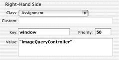
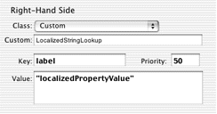
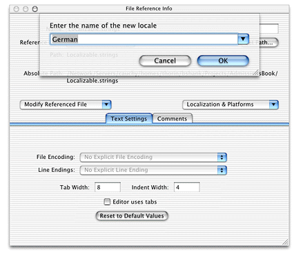
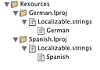

Problem: You want to localize the labels of properties in your application.
Solution: Write a Java class to perform the localized string lookup, get the user's preferred languages, and write a rule to get the localized strings.
Most of the rules you write and use in the rule system have a right-hand side class of type Assignment as shown in Figure 16-1.
Figure 16-1 Right-hand side class of type Assignment
The rule you'll write to localize dynamic components uses
the type Custom. By specifying a class name in the Custom field
and a method name in the Value field, the key specified in the Key
field is assigned to the return value of the specified method in
the specified class. In Figure 16-2, the key label is
resolved to the result of the method named localizedPropertyValue in
the class LocalizedStringLookup.
Figure 16-2 Right-hand class of type Custom
Before writing the rule, however, write the class that does the localized string lookup.
Add a class to your project called "LocalizedStringLookup." Add it to the Application Server target. Copy and paste this code into it:
Listing 16-1 LocalizedStringLookup class
import com.webobjects.foundation.*;
import com.webobjects.appserver.*;
import com.webobjects.eocontrol.*;
import com.webobjects.directtoweb.*;
public class LocalizedStringLookup extends DefaultAssignment {
D2WContext d2wcontext;
public LocalizedStringLookup(EOKeyValueUnarchiver unarchiver) {
super(unarchiver);
}
public LocalizedStringLookup(String key, String value) { super(key,value); }
public static Object decodeWithKeyValueUnarchiver(EOKeyValueUnarchiver
eokeyvalueunarchiver) {
return new LocalizedStringLookup(eokeyvalueunarchiver);
}
public synchronized Object fire(D2WContext context) {
d2wcontext = context;
Object result = KeyValuePath.valueForKeyOnObject((String) value(), this);
return result;
}
public String localizedPropertyValue() {
String displayName = (String) d2wcontext.valueForKey(D2WModel.PropertyKeyKey); //1
NSArray languages = (NSArray)d2wcontext.valueForKey("languages");
String returnstr =
WOApplication.application().resourceManager().stringForKey(displayName, "
Localizable", displayName, null, languages); //2
return returnstr;
}
}
Remember to change the package statement to the package your server-side (Application Server target) classes are in.
The most interesting part of the class is the localizedPropertyValue method.
The rule you'll write invokes this method to get the localized
string for a particular property. First, the method gets the display
name for the receiver's property (code line 1). That is, if the property
name is "date" (which corresponds to an attribute named "date"
in an entity in one of the application's EOModels) the display
name is the label that appears next to the widget representing the
"date" property in the application.
Code line 2 is the most important part of the method. It looks
for a localized string in a string table called "Localizable"
for the display name specified by displayName.
Since a localized application usually contains Localizable.strings files
for multiple languages, the stringForKey method
looks first for a Localizable.strings file
for the user's first preferred language. If it finds a Localizable.strings file
for that language, it returns the localized strings. If it does
not, however, it continues through the user's preferred languages
(returned by d2wcontext.valueForKey("languages") ),
defaulting to nonlocalized strings if it can't find a Localizable.strings file
matching one of the user's preferred languages.
Now that you have the method to look up localized strings, you need to add localized string tables to your project.
First, add a new file to the Resources group of your project
called "Localizable.strings." Add it to the Application Server
target. The syntax of a Localizable.strings file
is rather simple:
{
"<propertyName>" = "<localizedString>";
}
A Localizable.strings table
for the property name "date" for Spanish would be
{
"date" = "Fecha";
}
In the Localizable.strings table
you just added to the project, add string pairs for the property
keys in your application in English. You can find the names of the
property keys in a few ways: in the Direct to Java Client Assistant's
Properties pane; the output of the LocalizedStringLookup (which
contains the log statement "NSLog.out.appendln("displayName:
" + displayName);"); or by invoking attributeKeys on
an enterprise object's class description and printing the result.
When you're done adding English-localized strings, you can
add localized variants of the file to your project. Select the Localizable.strings file
and choose Show Info from Project Builder's Project menu. From
the Localization and Platforms pop-up menu, choose "Add Localized
Variant" as shown in Figure 16-3.
Figure
16-3 Add localized variant of Localizable.strings file
Add a localized variant for the language of your choice as shown in Figure 16-4. If the language is not listed, you can type it in the field underneath "Enter the name of the new locale."
Figure 16-4 Add localized variant for German
This action creates a directory called German.lproj (or
whatever language you chose) in your project and puts a copy of
the Localizable.strings file
in it. Figure 16-5 shows German and Spanish localized variants
in the Groups & Files list.
Figure 16-5 Localized resources in project
Now that you've created localized variants, you need to edit the variant to provide the language-specific strings for each property key. The German-localized variant might look like Listing 16-2.
Listing 16-2 German-localized variants of strings file
{
"modified" = "Geändert";
"documents" = "Dokumente";
"release" = "Freigeben";
"keywords" = "Schlüsselwörter";
"date" = "Datum";
"notes" = "Anmerkungen";
"illustrator" = "Illustrator";
}
Note: Make
sure that the encoding for all Localizable.strings files
in your project is Unicode. You can change the encoding of a file
by choosing an encoding from the File Encodings submenu of Project
Builder's Format menu. |
There is just one more thing you need to do to complete localization. Although the current process may seem tedious, think of the time it will save you: It saves you from needing to build localized variants of Interface Builder files by hand, or worse yet, from building localized versions of raw Swing components.
The final step is to write a rule to use everything you've just added to the application.
*true*labelCustomLocalizedStringLookup"localizedPropertyValue"50The key label is
assigned to the return value of the method localizedPropertyValue in
the class LocalizedStringLookup. In Rule Editor, this rule appears
as in
Figure 16-2.